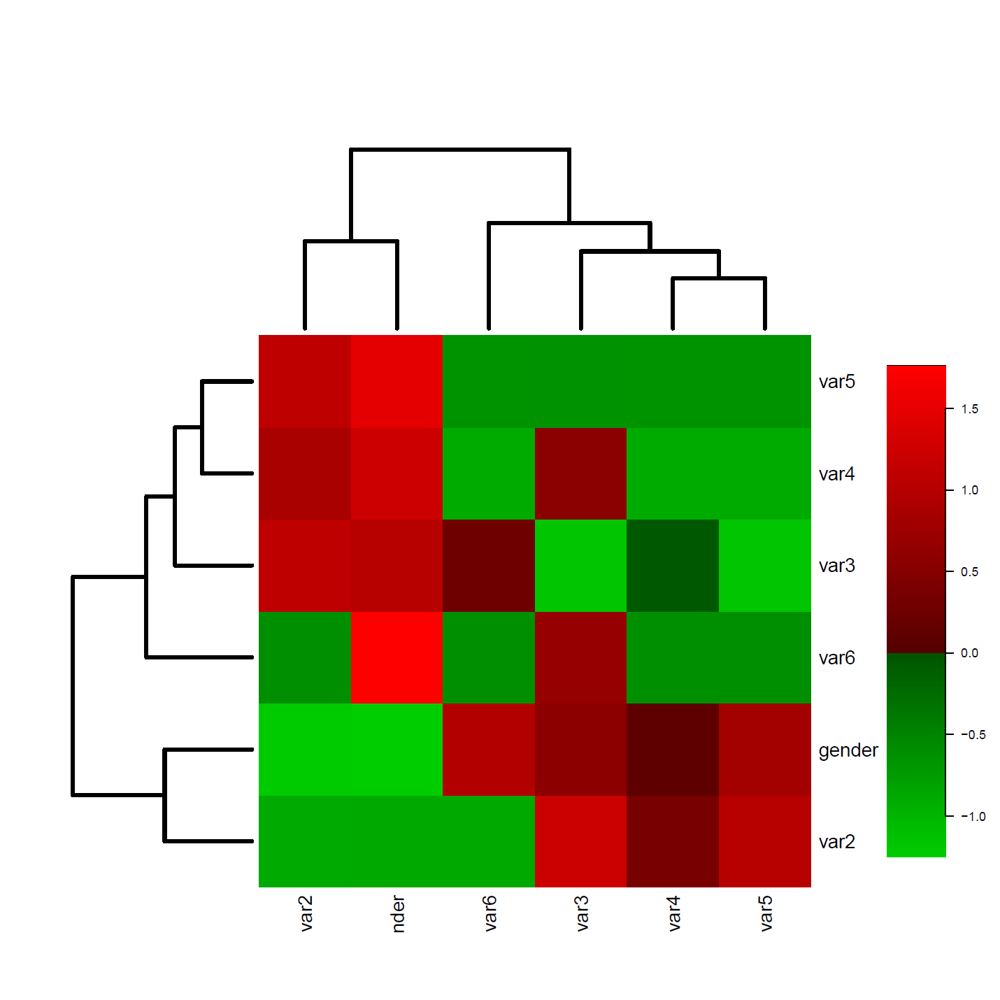

Some months ago, I had to explore a vast amount of categorical variables before making some multivariate analyses.
One good way to know your raw data, to make new hypotheses…etc, is to calculate some pairwise “crude” chi-square tests of independence of your factors, but it can be very time-consuming.
I mean, not time-consuming to make the tests (with a simple command it can be done), but to revise all of them.
